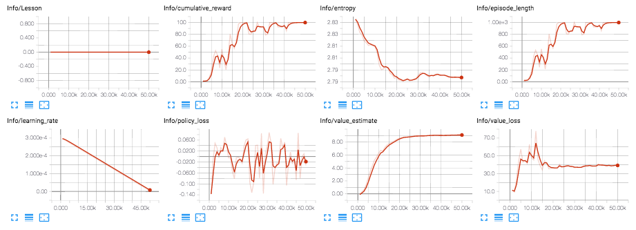

Using TensorBoard to Observe Training
ML-Agents saves statistics during learning session that you can view with a TensorFlow utility named, TensorBoard.
The learn.py program saves training statistics to a folder named summaries, organized by the run-id value you assign to a training session.
In order to observe the training process, either during training or afterward, start TensorBoard:
- Open a terminal or console window:
- Navigate to the ml-agents/python folder.
From the command line run :
tensorboard --logdir=summariesOpen a browser window and navigate to localhost:6006.
Note: If you don't assign a run-id identifier, learn.py uses the default string, "ppo". All the statistics will be saved to the same sub-folder and displayed as one session in TensorBoard. After a few runs, the displays can become difficult to interpret in this situation. You can delete the folders under the summaries directory to clear out old statistics.
On the left side of the TensorBoard window, you can select which of the training runs you want to display. You can select multiple run-ids to compare statistics. The TensorBoard window also provides options for how to display and smooth graphs.
When you run the training program, learn.py, you can use the --save-freq option to specify how frequently to save the statistics.
ML-Agents training statistics
The ML-agents training program saves the following statistics:

Lesson - Plots the progress from lesson to lesson. Only interesting when performing curriculum training.
Cumulative Reward - The mean cumulative episode reward over all agents. Should increase during a successful training session.
Entropy - How random the decisions of the model are. Should slowly decrease during a successful training process. If it decreases too quickly, the
betahyperparameter should be increased.Episode Length - The mean length of each episode in the environment for all agents.
Learning Rate - How large a step the training algorithm takes as it searches for the optimal policy. Should decrease over time.
Policy Loss - The mean loss of the policy function update. Correlates to how much the policy (process for deciding actions) is changing. The magnitude of this should decrease during a successful training session.
Value Estimate - The mean value estimate for all states visited by the agent. Should increase during a successful training session.
Value Loss - The mean loss of the value function update. Correlates to how well the model is able to predict the value of each state. This should decrease during a successful training session.